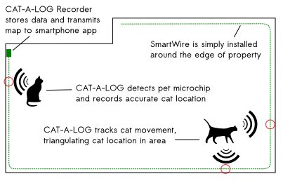
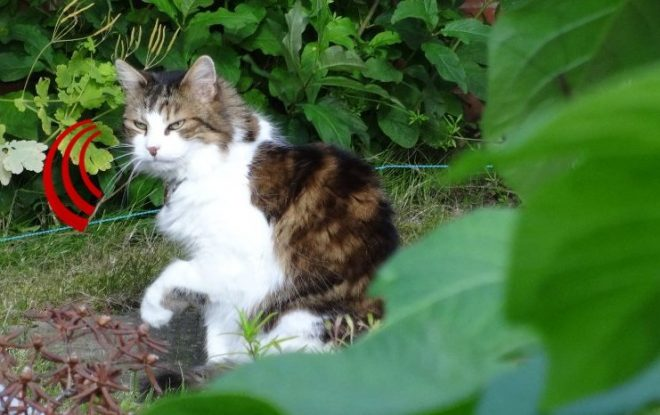
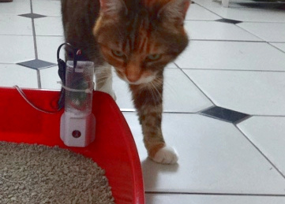
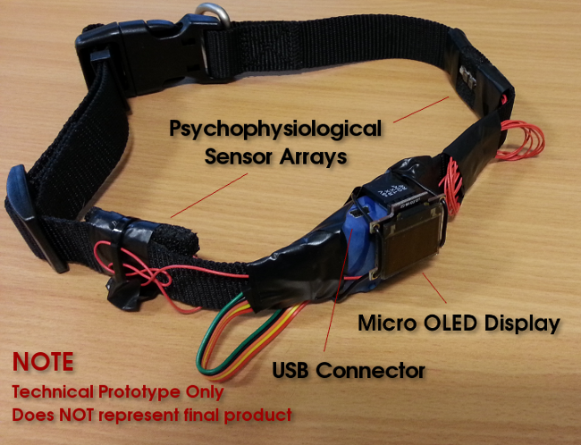

(2015) Speculative design as a tool to understand the implications of technology for animal companions.

We are seeing a proliferation of devices that aim to quantify everything. From the "quantified self" we see apps and geegaws that promise to measure your fitness, sleep, digestive health and a million other things, with the promise that increased awareness of these numbers will somehow vastly improve your mental and physical health.
These devices have been incredibly popular, and profitable, so naturally the phenomenon has exploded. Every week we see a shiny new kickstarter for a *thing* that is going to quantify your house, your kids and even your pets.
Of course, the actual fact is that the vast majority of these systems have not proven their benefits in any meaningful way, apart from fluffy anecdotal testimonials next to cute pictures of happy animals. Evgeny Morozov criticises this kind of thing as "solutionism", and argues that these products are "solutions to problems that do not exist".
We wondered about this gap - between what the product tells the pet owner, and what the actual basis for that technology is in reality. So we built three prototypes for quantified pet technologies. You can see the product websites at www.thequantifiedpet.com.

CAT-A-LOG is a wire that you can bury around the edge of your property that is able to read the microchips implanted in domestic cats and track movement. The companion app allows you to track the movement of any cat around your property by triangulating the cat's position in your property.

LITTERBUG is a device you attach to a cat litter tray. The device contains sensitive chemical receptors that are able to analyse the odours emanating from your cat's waste. These are analysed for key chemicals that are indicative of both health issues, and also hunting behaviour (based an analysing the cat's diet).

The final prototype is EMOTIDOG, an augmented dog collar that is fitted with several sets of sensors that monitor the psychophysiology of the host animal. Based on a range of factors, a clever AI algorithm is able to determine your dog's emotional state, which is shown using an emoticon on the small screen affixed to the collar. This allows you to get an idea of your dog's mental state.

These prototypes all exist, however are speculative designs. They function as tangible visions of future pet technology, based on current trends. The appearance and branding is based on current start-up aesthetics. For example, compare the Quantified Pets websites to real products like Whistle and FitBark.
We used these speculative designs to explore the opinions of pet owners and veterinary experts in a series of focus groups. Overwhelmingly we found that while the pet owners were excited by the promise of this kind of technology, the veterinary experts were horrified by the potential harm such devices could cause to the human-animal relationship. Most shockingly, we found that pet owners would more readily trust the opinions of such quantified pet technology over the opinion of a qualified veterinarian.
This project provides a vivid example of the issues surrounding the ethics of solutionist approaches to technology designs. Although we focussed on pets, the same applies to any unproven technology that argues it has any kind of benefit to your health or wellbeing. Essentially, you are often placing an enormous degree of trust in the developer without any knowledge of how they are qualified to make those judgements.
There is a lot more information on the study and background in our paper at CHI 2015, which was awarded an honourable mention (top 5% of submissions) at the conference. The abstract is below:
"There is growing interest in technology that quantifies aspects of our lives. This paper draws on critical practice and speculative design to explore, question and problematise the ultimate consequences of such technology using the quantification of companion animal (pet) behavior as a case study. We apply the concept of ‘moving upstream’ to study such technology and use a qualitative research approach in which both pet owners, and animal behavior experts, were presented with, and asked to discuss, speculative designs for pet quantification applications, the design of which were extrapolated from contemporary trends. Our findings indicate a strong desire among pet owners for technology that has little scientific justification, whilst our experts caution that the use of technology to augment human-animal communication has the potential to disimprove animal welfare, undermine human-animal bonds, and create human-human conflicts. Our discussion informs wider debates regarding quantification technology."
Shaun Lawson, Ben Kirman, Conor Linehan, Tom Feltwell, and Lisa Hopkins (2015) Problematising upstream technology through speculative design: the case of quantified cats and dogs. Proceedings of ACM SIGCHI Conference on Human Factors in Computer Systems. Seoul, Republic of Korea